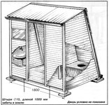
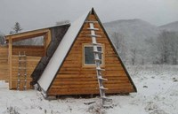
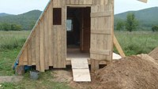
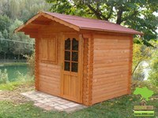

Ошибки начинающих экостроителей. Часть 1.
Как и обещал, эта статья — про ошибки, которые допускают многие начинающие экостроители. Ошибки, которых не избежали и мы.
Если вы внимательно прочитаете и осознаете написанное — вы существенно облегчите себе жизнь. Вчитайтесь: облегчите себе жизнь. Имею ввиду, что сможете сэкономить, скажем, год жизни. Не заниматься этот год расхлёбыванием собственных ошибок, а радоваться жизни, занимаясь действительно нужными и полезными вещами.
Опыт
Неверные решения из-за отсутствия опыта — самая главная ошибка, которая рождает миллионы других ошибок. Накапливаясь, они превращаются в снежный ком, катить который становится очень сложно.
Если вы собрались строить эко-дом, то вы наверняка приняли это решение:
- либо прочитав какую-то литературу (например, В. Мегре),
- либо насмотревшись видео о том, как это классно и доступно,
- либо начитавшись соответствующих статей в интернете (в том числе моих),
- либо всё это вместе взятое.
Также вероятно, что вы ни разу в жизни не строили дом. Это значит, что у вас НЕТ ОПЫТА, а только эмоции. Эмоции проходят довольно быстро, на них не рассчитывайте. А вот опыт — вещь ценнейшая и его нужно приобрести.
Хватайтесь за любой РЕАЛЬНЫЙ опыт. Задавайте вопросы людям, которые этим реальным опытом обладают. И внимательно слушайте то, что они вам говорят, засунув в задницу все свои эмоции и амбиции. Лучше не просто внимательно слушайте, а ещё и записывайте.
Полезно будет поездить по поселениям и пообщаться с людьми, построившими свой дом по тем технологиям, которые интересны вам. Ещё более полезно — пойти волонтёром на какую-нибудь эко-стройку. Только не просто на денёк, а недели на две хотя бы. Чтобы прочувствовать что это такое и понять технологию вообще и узнать о нюансах. А заодно почерпнуть опыт оптимизации. А теперь ещё раз прочитайте этот абзац и занесите в свои планы минимум две недели на волонтёрство. Этими двумя неделями вы в будущем сэкономите от трёх месяцев до года.
Оптимизация
Даже если вы поучаствовали в экостройке и пообщались с дюжиной-другой экостроителей с опытом, поверьте, у вас всё равно довольно размытое представление о том, каково это — строиться самому. Из общения, из литературы, из видео и статей может сложиться впечатление, что это легко, и что это просто.
Это не так. Даже за две недели вы этого не поймёте.
Строительство своими силами — процесс очень сложный как физически, так и психологически. Не помню где я натыкался на этот пример, но достаточно хорошо описывает реальность такой образ: представьте, что все ваши силы физические, психологические, все ваши мечты, чаяния, способности и сверхспособности — залиты в бочку. Каждый раз когда вы делаете какое-то действие на стройке, вы вычёрпываете из этой бочки. И чем больше усилий вы тратите на стройку, тем быстрее и бóльшими порциями вы вычёрпываете.
Поверьте, содержимое этой бочки очень ограниченно. Нужно относится к нему ОЧЕНЬ бережно. И нужно прикладывать все возможные силы и средства, чтобы вычёрпывать меньше. Нужно максимально экономить силы и максимально заботиться о своём психологическом состоянии.
Экономим силы
Не пытайтесь бороться с Системой. Это глупо и контрпродуктивно. Гораздо эффективнее будет использовать её достижения в своих целях.
Во-первых, это касается использования каких-то современных материалов. "Какой же это экодом, с современными материалами?" — спросите вы. Я же отвечу, что радетели экостроительства переоценивают неэкологичность некоторых современных материалов и также переоценивают экологичность несовременных.
Например, фундамент лучше делать с использованием бетона (либо целиком из него). Выложить фундамент просто из камней — требует огромного опыта и понимания физики. Учитывая, что у вас нет опыта, у вас это не получится с вероятностью 80%. И даже если получится, то не факт, что потом проблем не возникнет.
Фундамент из дерева требует опыта в отборе материала, в принципах работы с ним и в его обработке, а затем и обслуживании. Чем потом перестраивать дом заново, лучше эти усилия потратьте на что-то более важное.
Кровлю также лучше сделать из современных материалов. В соотношении "цена — количество усилий" этот вариант гораздо эффективнее чем глина, берёзовая кора, дранка или что угодно ещё.
Во-вторых, используйте для любых задач тот инструмент, который для этого создан. Это экономит ваши силы и ваше время, а заодно и повышает качество и надёжность результата. Приобретите весь набор инструментов, который необходим. Чтобы потом не забивать гвозди камнем и не закручивать саморезы плоскогубцами. Лом или монтировка иногда незаменимы.
В-третьих, по-максимуму используйте электро- или бензоинструмент!!! Наличие на участке электричества ускоряет строительство в два раза минимум. А значит, вы сэкономите половину бочки ваших усилий. То же и с бензоинструментом. Да, мы делали всё ручным инструментом, но мы это делали лишь чтобы доказать, что это возможно. Но лучше не испытывать себя на прочность, а достигать результата кратчайшим путём. Поверьте, это более экологично.
Психологическое состояние
Если во время стройки вы всё время будете чувствовать дискомфорт — вы будете постоянно вычёрпывать из вашей бочки. Многие из вас наверняка намеренно пытаются отказаться от благ цивиллизации. Да, отказываться от них полезно, но лишь временно, для калибровки организма и мозга. Чтобы быть более благодарным Вселенной за то, что они у вас есть.
Но, поверьте, психологический комфорт на стройке очень важен. Он складывается из простых факторов: тепло, удобство, досуг, красота. Прежде чем начать строить, вам необходимо обеспечить себя всем этим. Вам необходима либо бытовка (вагончик или домик), либо большая армейская палатка (в которой можно находиться стоя), либо какой-то аналог вроде домика Адвоката Егорова (видео в конце статьи, чтоб сейчас не отвлекались).
Исходя из опыта, могу сказать, что в домике временного пребывания обязательно должны быть:
- Потолки хотя бы немного выше вашего роста. Жить в обычной туристической палатке под навесом (как это делали мы) не рекоммендую. Слишком долго описывать все её негативные факторы. Вам будет достаточно знать, что они замедляют строительство.
- Спальное место. Чем оно удобнее, тем меньше будете черпать из бочки каждый день.
- Стол и стулья (лавки). Для еды и для рисования планов, узлов, чертежей и идей. Важна возможность сидеть за столом. Частенько нужно быстро сесть, что-то начертить, встать и пойти. На спальное место в рабочей одежде вы не сядете. Также во время дождя находится только в лежачем положении не просто не удобно, но и вредно. Отнимает силы.
- Освещение. Идеально, если на участке есть электричество и вы пользуетесь обычной лампочкой. Но сойдут и фонари на аккумуляторах. Их сейчас полно всяких разных, и стоячих, и висячих. Такие фонари на порядок удобнее свечей. Одной зарядки хватает почти на месяц. Лучше взять фонарь без солнечной батареи. Это будет и дешевле, и эффективнее. Солнце не успевает заряжать фонарь за день, чтобы он светил достаточно ярко. Соседи использовали 8-10 маленьких садовых фонариков на солнечной батарее, которые вечером клали в прозрачную коробку, но светили они всё равно очень слабо. Даже почитать не получится. Фонарь, заряжающийся от розетки — ваш выбор.
- Кухонный уголок. Очень удобно готовить на портативной газовой плитке. Продукты хранить удобно в пластиковых баках с крышками (не откручивающимися!!!, а просто открывающимися). Им ни мыши, ни осадки не страшны.
- Душ. Либо внутри "помещения", либо в непосредственной близости снаружи. Чем лучше оборудован душ, тем выше ощущаемый психологический комфорт. Лучше заморочиться и сделать нормальный садовый душ с чёрным баком на крыше. Чтобы весь строительный сезон была "горячая" вода. Сделайте душ до начала стройки!
- Туалет. Желательно недалеко. Хорошо оборудованный туалет также существенно повышает комфорт и ускоряет стройку. Не приходится каждый раз ходить по окрестностям в поиске места где бы спрятаться.
- Место для хранения инструмента, хорошо защищённое от дождя. Учтите, что там будут храниться в том числе габаритные штуки вроде тележки, лопат, генератора, бензопилы, мешки с цементом (должны лежать не на земле, а на паллетах), различные рулонные материалы. Потратьте время и сделайте это хранилище хорошо организованным. Продумайте места для хранения мелочей — как небольшого инструмента, так и всяких гвоздей, саморезов, скоб.
- Подумайте как будете обогревать ваше временное жилище в холодную погоду. Даже летом бывают дождливые дни. В принципе, с отоплением небольшого помещения может справиться портативная газовая плитка.
- Вода. Решите где будете брать воду отдельно для питья и для хозяйственных нужд. Подготовьте всё необходимое заранее.
Чем лучше оборудовано ваше временное жилище и чем лучше организовано его пространство, тем эффективней вы будете как боевая единица. Из написаннного может сложиться впечатление, что для строительства дома требуется дом. :)
В идеале — да. Будет отлично, если у вас есть садовый домик либо на самом участке, либо вы снимаете домик в деревне неподалёку. Либо у вас есть специальный вагончик-вахтовка. Но, повторюсь, можно обойтись и чем-то импровизированным.
Выводы
- Очень важен опыт. Он позволит не совершить массу ошибок, сэкономит силы, время, деньги и здоровье. Общайтесь с экостроителями, побудьте волонтёром на стройке.
- Продумывайте всё так, чтобы во время стройки максимально экономить силы. Используйте электро- и бензоинструмент.
- Обеспечьте себе комфортные условия временного проживания. Отдых очень важен.
Заранее, перед стройкой подготовьте всю инфраструктуру. Иначе вы будете переключаться от стройки к бытовухе, и потеряете драгоценные силы и время. Мы на этом потеряли примерно год.
Исходя из вышесказанного отличной идеей будет протестировать выбранную технологию строительства на очень маленьком объекте — бытовке. Внутреннего размера 2х3 метра будет достаточно. Во-первых, вы приобретёте самое ценное — опыт. Во-вторых, поймёте как оптимизировать будущую стройку. В-третьих, в процессе создадите требуемую инфраструктуру. В-четвёртых, обеспечите себе комфорт во время стройки дома.
На этом пока остановлюсь. Осталось ещё масса важных факторов, о которых нужно сказать, но об этом в следующий раз.
Напоследок несколько идей простеньких бытовок и обещанное видео про домик Адвоката Егорова.




Комментарии
Антон
Хочется выразить свое мнение на некоторые моменты, так как опыт строительства, причем в том же поселении, только уже совсем без соседей, я успешно приобрел в прошлом и текущем году.
Я начал строительство в 2015 году, после того, как в следствии пожара, сгорели дома всех поселенцев и их «сдуло» с земли. Соответственно строится пришлось вообще одному, даже без девушки, что существенно усложняло весь процесс.
Касаемо «бочки», которую вы можете вычерпать.
Черпать из нее не стоит вообще и точка…
Это возможно только при условии подхода к строительству с точки зрения игры!
Не ставьте себе сроков, не ждите и не надейтесь на результат. Наслаждайтесь вместо этого тем, что вы делаете здесь и сейчас! Это и есть ваш досуг, ваш самый интересный интерес))). Если вы это делаете ради результата, вы быстро потеряете интерес и для вас это будет тяжелый труд. А для меня это не было трудно. Мне было интересно, и усталости особой не было. Потому, что я это делал с неподдельным интересом, и делал ровно столько сколько хочу, не ставя задачи и сроки.
А позволить я себе это мог, потому, что мне есть где жить и есть, что есть. Мне это не жизненно необходимо. Мой участок это мое развлечение, - хобби если хотите. Да я буду там жить, с женой растить детей, попробовать различные методы выращивания растений, теплицы, вегетарии и тп, и это все серьезно. Но это в то же время просто хобби. Не придавайте этому большой значимости, это главный ключ к успеху и неисчерпаемому источнику жизненной силы. Это вас не утомит никогда, если будет интересно…
Я каждый день ездил домой и не жил на участке не единого дня до сих пор. Хотя там уже есть домик, но он не достроен и лично я считаю, что мне там будет некомфортно на данный момент, поэтому я там не живу. И изменю свое решение, не раньше, чем там появится электричество и вода. Хоть это и временный домик 6*4 с теплицей 6*3, в нем будет даже санузел, ну и само собой гостиная, она же спальня и кухня.
Лучше дождитесь подключения электричества, перед началом стройки. Если же его там не планируется, то первое что вам нужно купить, это два или 4 аккумулятора, общей емкостью от 150А/ч, лучше больше, особенно если вы планируете все же жить на участке. АКБ желательно гелиевые, или AGM, так как они герметичны и могут хранится использоваться и заряжается прямо у вас перед носом, у них нет вредных испарений, а это крайне важно, так как работать им внутри помещения. Это обычные свинцовые АКБ и они боятся глубокого разряда, они быстро умрут если вы будете их сильно разряжать, поэтому чем больше у них емкость, тем дольше они прослужат вам. К слову для незнающих. Глубокий разряд, это 50% заряда. Желательно не допускать разряд ниже 70%, и в кратчайшие сроки заряжать их, иначе деградация неминуема. Для их заряда нужен мощный импульсный зарядник с фиксированным напряжением 14,5В и током до 1/10 (как минимум) от общей емкости. И вам придется их возить на зарядку. Или вам нужно будет приобрести солнечные панели с контроллером заряда для этой цели. Крайне желательно иметь вольтметр для контролирования уровня заряженности АКБ. Солнечные панели нужны мощные не менее 200Вт с напряжением соответствующим питающему напряжению вашей составной батареи. А это 24 или 48 Вольт, то есть панель нужна 32 или 60 Вольт минимум. Естественно и контроллер заряда должен быть рассчитан на такое напряжение и ток который способны выдать ваши панели, а это 200/24=10А или 200/48=5А, но лучше больше. Тут не бывает много, только мало! Вам также нужен инвертор 220В, мощностью от 2000Вт иначе, вы не сможете подключать к нему весь ваш инструмент, к слову 2000Вт это минимум. Почему я рекомендовал 24 или лучше 48Вольт. Все очень просто, если ваш инвертор будет 12Вольт 2000Вт, ему потребуется 2000/12=200Ампер + КПД не забудьте добавить. Представьте себе толщину того медного провода, который выдержит этот ток… К тому же чем он будет тоньше, тем больше потерь будет на проводе, он просто будет как сопротивление при таких токах. А если вы используете инвертер на 48 Вольт, то ток будет в 4 раза меньше, 50 А, а это уже куда проще…
Свет от фонарика, это не панацея. Если как написано в статье он горит месяц, значит он маломощный. Видел я их фонарик, он дает света, реально ненамного больше чем полная луна в ясную ночь))) Конечно я утрирую, но это не далеко от истины. Нормальный светодиодный фонарь имеет мощность от 5 Ватт, и он сжирает нормальный литий ионный АКБ 3,7В на 2000мА, за 1 час примерно. При условии, что АКБ очень хороший. Ну и дает он света, только там куда вы его направите. Это не вариант даже для чтения, не вариант, для того, что бы вообще что то делать. Но с ним можно сходить в туалет ночью, этого не отнять… А для освещения домика или палатки, нужно использовать те же АКБ описанные выше, чья емкость за 150А/ч при напряжении 12В. Есть готовые решения или если голова варит, а руки умеют делать, то можно самому спаять, качественное и мощное освещение от 12, 24 или 48 Вольт. Тао бао вам предложит как все расходники, так и готовые лампы. Но учтите что хорошие светодиоды с верно указанной мощностью, тоже жрут много. Для освещения комнаты в моем домике, я собрал две лампы, на 1 Ватных диодах, мощностью по 17 Ватт каждая, одной из них для работы реально маловато. А это в сумме и учитывая КПД около 40 Вт. Никакой фонарик, вам не даст нормального света, и не мечтайте даже…
Душ, туалет и место для хранения всего, это конечно круто, но на постройку этого всего у вас может уйти не один месяц, а может и весь сезон… Поэтому возможно самый лучший вариант, это привезти на участок, железный контейнер, я пользовался соседским, за что им благодарен. Я не сторонник срать в одно место несколько раз, если там нет слива воды. Считаю это мерзким занятием и не экологичным, как для моих легких и психики, так и для окружающей природы. Лучше я найду кусты, каждый раз новые… А потом буду это делать в доме… Мыться и стираться на месте, при отсутствии воды, вам не удастся, даже если построить душ. Вода в душе появляется не от его наличия к сожалению, а от того, что либо вы ее, ту воду возите на машине бочками, либо вы делаете скважину с насосом и тп, либо ведрами носите с ближайшей лужи, либо с колодца. Про то, что бы брать ее с крыши при дожде я молчу, поскольку крыши то у вас и нет пока… Поэтому думаю, эта чудесная постройка также лишняя, мыться вам придется где то в другом месте. Хотя у вас могут для этого быть и другие варианты, все зависит от места. Но все не так однозначно как в статье…
Свобода Изнутри
Антон, отличный комментарий!
Я бы даже сказал, отличная статья! Если ты не против, я могу выложить, с твоим авторством.
Антон
Да комната та, что я освещал диодами общей потребляемой мощностью в 40 Вт, была всего 12кв метров... обита она светлым деревом, что дополнительно усиливает свет. В темной палатке, света нужно больше... Покрайне мере для работы. А так для ничегонеделания, хватит и 20 ватт
Антон
Используй все что хочешь, если от того будет кому то польза, это здорово.
Антон
Только, можно более подробно описать многое, если делать статью
Бореслав
Жму руку-согласен со всем!😀. Скажу даже резче, если не соблюдать ВСЕ пукты, описанные в статье, то стройка может не то что расстянуться, а не закончиться вообще....